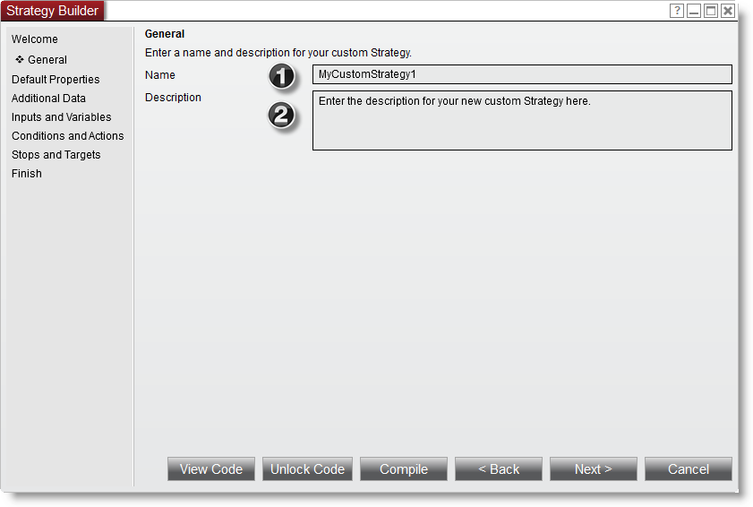
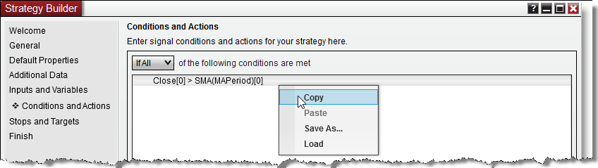

|
<< Click to Display Table of Contents >> Builder Screens |


|
Builder Screens
|
<< Click to Display Table of Contents >> Builder Screens |
|
The Builder point and click interface is a powerful entrypoint into NinjaScript strategy development for non programmers. Even if you target more deeper custom coding later on in the development cycle, the Builder can provide a great foundation to start with. To get started directly into full fledged programming a strategy object in the NinjaScript editor, please check into NinjaScript Wizard.
 Understanding the Welcome screen
Understanding the Welcome screen
Welcome Screen LayoutThis is the first screen and starting point in the Strategy Builder.
1.In the Strategy drop-down select New Strategy to create a new strategy script - all other Builder made scripts will be listed as well, so should you wish to modify a script - please select the desired one and proceed through the screens. 2.Press the View Code button at any time to view the Builder generated NinjaScript code. 3.Press the Unlock Code button at any time to open the NinjaScript editor and edit your strategy code. Once the code is unlocked, you can no longer use the Builder for subsequent strategy editing 4. Press the Compile button at any time to compile your strategy code. 5. Press the <Back or Next> buttons to move back or forth between Builder screens - you can also directly jump to a specific screen by using the left side navigation menu. 6. Press the Cancel button to leave the Strategy Builder
Note: Should you want to make a copy of your strategy, you can select your saved script in the Strategy drop-down and select 'save as' - this opens a file dialog, where you can enter a new name to save the script copy under.
|
 Understanding the General screen
Understanding the General screen
General Screen Layout The General screen is where you enter the name and description of your strategy.

1. Sets the name of the strategy 2. Sets the description of the strategy |
 Understanding the Default properties screen
Understanding the Default properties screen
Default properties screen LayoutThe Default properties screen is where you can set the default values for your custom strategy properties.
1. Per default only the Calculate section is visible, click the More properties to expand the selection to include all strategy default properties as well to set for your Builder script.
|
 Understanding the Additional data screen
Understanding the Additional data screen
Additional data screen LayoutThe Additional data screen is where you can optionally select additional instrument data or custom series for your strategy.
1. Press the add button to be able to configure a new series to add 2. Press the edit button to be able to configure an existing series 3. Press the remove button to be able to remove an existing series
Data Series Selector LayoutSelect your instrument data series to add here
Custom Series Selector LayoutSelect your custom series to add here
|
 Understanding the Inputs and Variables screen
Understanding the Inputs and Variables screen
Inputs and Variables screen LayoutThe Inputs and Variables screen allows you to define the user inputs of your strategy. User inputs are important if you require input values that may vary the performance of your strategy. If for example you have a simple moving average cross over system, you may want to create an input for the fast moving average and another for the slow moving average. This then allows you to change the values of the moving averages at run time from the UI. Inputs are also required if you plan to use the NinjaTrader Strategy Analyzer's optimization capabilities.
1. Press the add button to add a new user input. 2. Press the edit button to edit an existing, selected user input. 3. Press the remove button to remove the selected user input.
1. Press the add button to add a new user variable. 2. Press the edit button to edit an existing, selected user variable. 3. Press the remove button to remove the selected user variable.
|
 Understanding the Conditions and Actions screen
Understanding the Conditions and Actions screen
Conditions and Actions screen LayoutThe Conditions and Actions screen allows you to set conditions and subsequent actions that control the flow of your strategy.
Conditions - Take the specified action when true Actions - Execute an action (submit orders, draw objects on the chart etc ...) based on its parent condition evaluating to true
Via the Builder, you can have an unlimited set of conditions with related actions and you also group conditions into a condition group (for example for a certain set of filter rules like time)
Conditions and condition groups are created using the Condition Builder. Actions are specified by the Strategy Actions window.
1. Selects if all of the individual conditions have to be met in order to trigger an action, or if any will be sufficient. 2. Displays the conditions associated with the currently selected condition set 3. Adds, opens condition grouping(*), edits or removes a condition (a double click on selected item will also allow editing) 4. Displays the actions associated with the currently selected condition set 5. Adds, edits or removes an action (a double click on selected item will also allow editing) 6. Selects the condition set you wish to edit
* For an example on working condition groups, please see "How to create a Time Filter' in the Condition Builder section
You can copy and paste conditions from one set to another and you can even save a condition set as a template and load for future use via the right mouse button click context menu as show in the image below. To save a condition set as a template, select the Save As... menu item and then to re-use it in another strategy or condition set at a later time, select the Load... menu item.
 |
 Understanding the Stops and Targets screen
Understanding the Stops and Targets screen
Stops and Targets screen LayoutThe Stops and Targets allows you to set stop loss, trail stop, parabolic stop (R15 and higher) and profit target orders that are automatically submitted and managed once your strategy opens a position.
1. Displays stops and targets associated with your strategy 2. Adds a stop or target to your strategy 3. Edits the selected stop or target in your strategy (a double click on the selected item will also allow editing) 4. Removes the selected stop or target from your strategy |
 Understanding the Finish screen
Understanding the Finish screen
Finish screen LayoutOnce you reach this screen you are finished with developing your strategy. Press the Finish button to compile your strategy which will then be ready for backtesting or live execution.
|